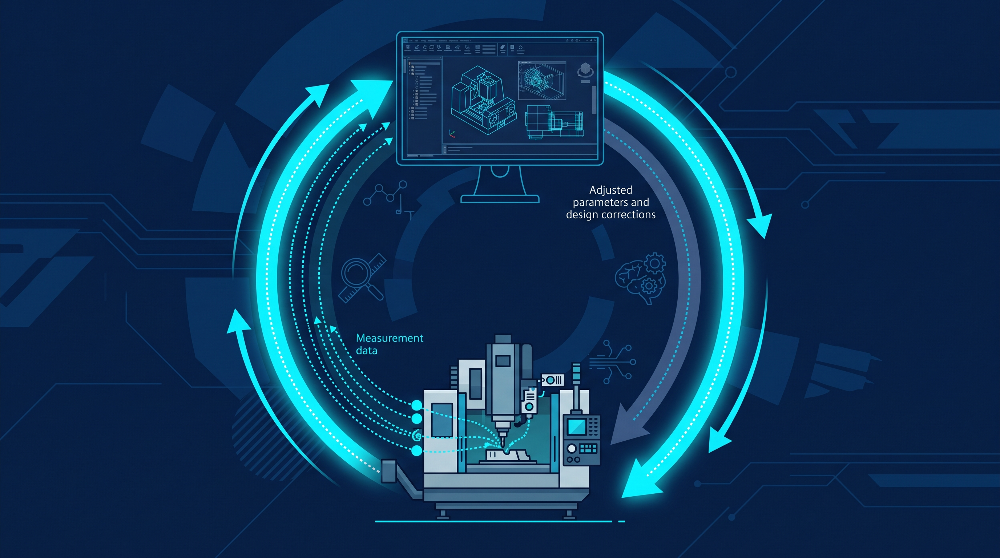

The Digital Thread Is Becoming a Living System
For most of the last decade, the digital thread was treated as plumbing — a project to stitch planning, CAD design, CAE analysis, BOM production planning, MES execution, supply-chain management, and maintenance data into one continuous pipeline. Worthy, but static: a system of record. In 2026, that framing is being retired. The industry is shifting toward something else entirely — an agentic decision backbone, where autonomous agents and generative AI detect changes in real time and dynamically alter process plans. The thread is no longer a repository. It is becoming a living system.
From System of Record to Decision Backbone
The classic digital thread was the interoperability architecture spanning the full product lifecycle: planning, CAD, CAE, BOM, MES, SCM, MRO. Every phase connected, every change traceable. It was a triumph of data hygiene, and it mostly produced dashboards.
Microsoft's global manufacturing analysis argues the decisive shift: in 2026 the thread is turning from a static data repository into a living system that autonomously judges real-time changes. Beyond personal Copilot assistants, multi-agent systems now orchestrate the whole loop — design change, simulation, manufacturability review, schedule change — as one continuous motion. The thread doesn't just record decisions anymore; it participates in them.
What a Living System Looks Like in Practice
The examples are concrete. Mars, with 124 plants, and Epiroc, the Swedish mining-equipment maker, both now link multilingual, unstructured field feedback with Siemens Teamcenter engineering data in real time. A note from a field technician arrives in one language and reaches the engineering data model in another — no human translator in between.
The payoff: design-change speed and predictive-maintenance accuracy both improved sharply. The thread is alive when field noise lands on the engineer's screen by the next shift, structured and in context.
Aerospace Had to Get Here First
Aerospace and defense — an industry with over $750B in annual revenue — has made the digital thread a survival-level operating model, not a nice-to-have. SAP's lifecycle data analysis puts numbers on what unbroken threads deliver: engineering change cycles cut 20–30%, schedule predictability improved up to 25%, manual earned-value-management (EVM) reconciliation effort cut 30–50%, final cost-at-completion (EAC) forecast accuracy improved 10–20%, and unplanned maintenance reduced 20–30%.
Notice what is being improved. Not drawings, not dashboards — forecasts, schedules, and maintenance windows. The thread pays off in the operating metrics the CFO already watches.
The Loop Finally Closes on the Shop Floor
The hardest silo was measurement. Data from CMMs, optical scanners, and vision sensors used to sit in quarantine — isolated, inspected only after the fact for defect detection. Now, via open metrology interfaces, measurement data is back-propagated into the digital thread in real time, as reported in digital manufacturing workflow coverage.
Cumulative tolerance variation and machine drift now feed instantly back into CAD parameters and CAM machining parameters. The design literally adjusts to what the machines are doing. First-pass yield climbs, and adaptation to design changes shrinks from weeks to near-real-time. This is the living system in its most literal form: the factory telling the model what it learned today.

Why Most Programs Still Stall
And yet the gap between leaders and everyone else is wide. A joint AIA/EY survey found 56% of companies are still at the PoC or local-pilot stage — and only about 1 in 7, roughly 14%, has built an enterprise end-to-end digital thread. The blocker isn't technology. It's sponsorship.
IT-led, technology-centric projects get perceived as cost centers and fail to break silos. Only business-led projects — tied to concrete business outcomes like lead-time reduction, procurement compliance, and rework cost — make it past the pilot to real ROI. The thread lives or dies as a business program, not an architecture diagram.
The Real Product of AI Is the Decision
Here is the frame that ties it all together. Jason Kasper of Aras, writing alongside Microsoft's manufacturing analysis, argues that focusing engineering AI on assisting individual tasks — code generation, auto CAD drawing — misses the point of the digital thread. The true unit of industrial value AI creates is the decision: evaluating how one design change ripples across schedule, supply-chain risk, regulatory compliance, and scrap rate.
Apply AI to siloed tools without a digital thread and you just accelerate wrong decisions — the same fragmentation at higher speed. The real advantage doesn't come from the size of the foundation model. It comes from structuring decades of enterprise IP — CAD, BOM, change history — through the digital thread into a data pipeline AI can actually reason over. Microsoft's analysis lands in the same place: only when the thread operates as a living system can AI move past suggestions to autonomously executing processes in the agentic era.
Build the Backbone, Then Let the Agents Run
The plumbing metaphor isn't wrong — it's just incomplete. A digital thread still has to connect planning through maintenance. But the winners in 2026 aren't the companies with the most connected systems. They're the ones whose threads judge, decide, and execute. Static threads document the past. Living ones shape tomorrow's build.